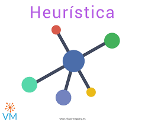
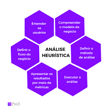
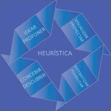

Principios de la Heurística
- Simplicidad: Las heurísticas son reglas simples que ayudan a tomar decisiones de manera rápida y eficiente. En lugar de considerar todas las posibles opciones, se enfocan en aquellas que son más probables de conducir a una solución.
- Practicidad: Estos métodos son prácticos y aplicables en situaciones reales, especialmente cuando el tiempo es limitado o cuando se dispone de información incompleta.
- Flexibilidad: Las heurísticas pueden adaptarse a diferentes contextos y problemas. No están restringidas a un conjunto específico de circunstancias.
Tipos Comunes de Heurísticas
- Heurística de Representatividad: Esta se usa para hacer juicios sobre la probabilidad de un evento basado en su similitud con un prototipo existente.
- Heurística de Disponibilidad: Se basa en la facilidad con la que se puede recordar algo. Si un evento o situación es más fácil de recordar, se considera más común o probable.
- Heurística de Anclaje: Esta se refiere a la tendencia de las personas a basar sus estimaciones y decisiones en un valor inicial (ancla) y ajustarlas a partir de ahí.


